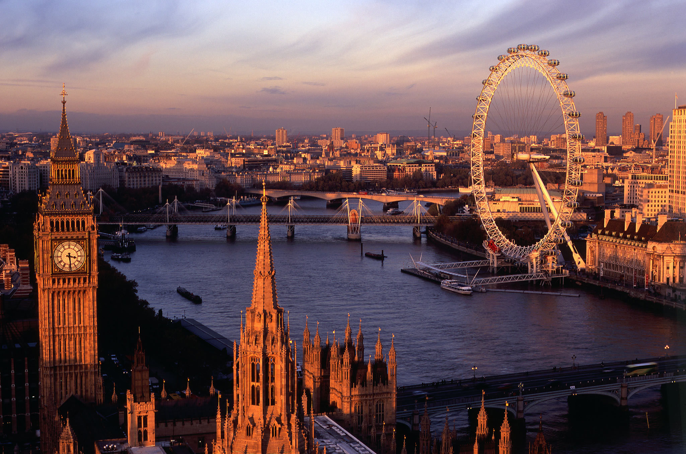

Londra, Anglia
#7 în cele mai Bune Vacanțe în Europa
De Ce Să Mergi La Londra, Anglia
Londra este o lume în sine. Eclectic cartiere, care sunt acasa, la un amestec de repere istorice și moderne-zi atracții, puteți să vă păstrați ocupat pentru zile. Dacă e pentru prima dată în Londra, alături de un tur care te duce în trecut, primele locuri ca Tate Modern instituții de artă, Palatul Buckingham, Turnul Londrei, Borough Market și Muzeul Britanic, înainte de ședința în jos pentru un joc clasic de ceai de după-amiază sau a verifica afară un pub local pentru friptura de duminica. Odată ce ai văzut cele mai importante obiective turistice, plimbare prin posh străzile din Mayfair sau Chelsea...
New York City
#1 în cele mai Bune Orașe din SUA

De Ce Te Duci La New York
Rece, cosmopolit, aglomerat, în continuă evoluție ... Big Apple amestecuri oraș mare splendoare, cu farmecul orașului. În mijlocul New York repere iconice și zgârie-nori falnic, vei experimenta o cultură vibrantă străbate fiecare din orașul distinctiv cartiere și orașe. Urmați trendsetteri la Est de Sat și Brooklyn pentru a verifica indie buticuri, iconic brutării și la modă, magazine de cafea. După aceea, ia cunoștință de rafturi de elegant magazine captuseala Fifth Avenue...